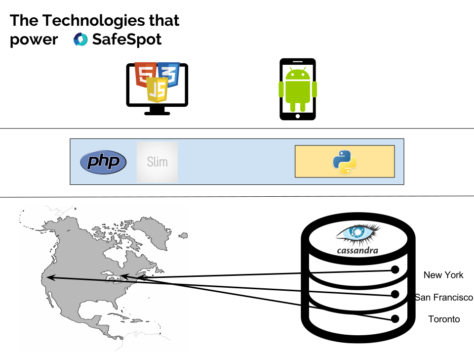
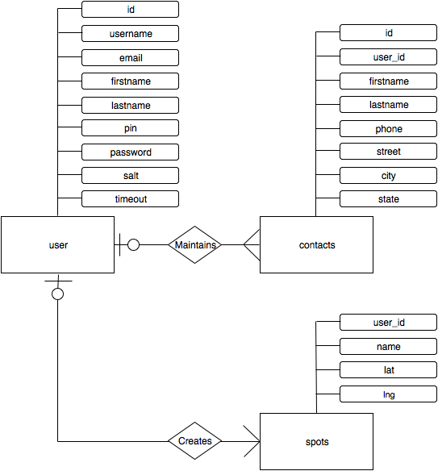

<!DOCTYPE html>
<html>

<head>
	<meta charset="utf-8">
	<meta http-equiv="X-UA-Compatible" content="IE=edge">
	<meta name="viewport" content="width=device-width, initial-scale=1">
    <title>Technical Overview</title>
	<link rel="stylesheet" type="text/css" href="css/acc_config.css">
	<link rel="stylesheet" href="css/tech.css">
	<link rel="stylesheet" href="http://maxcdn.bootstrapcdn.com/font-awesome/4.2.0/css/font-awesome.min.css">
	<link href='http://fonts.googleapis.com/css?family=Cookie' rel='stylesheet' type='text/css'>
    <script src="http://ajax.googleapis.com/ajax/libs/jquery/2.1.1/jquery.min.js"></script>
    <script src="js/acc_config.js" type="text/javascript"></script>
</head>

<body background = images/city2.jpg>
    <div class="wrapper">
	<aside class="sidebar-left">
		
		<div class="sidebar-links">
            <a class="link-lightteal" href="index.html"><i class="fa fa-home"></i>Back to Homepage</a>
			<a class="link-lightteal" href="about.html"><i class="fa fa-info-circle"></i>About Us</a>
			<a class="link-lightteal" href="development.html"><i class="fa fa-users"></i>Development Details</a>
			<a class="link-lightteal selected" href="technical-overview.html"><i class="fa fa-code"></i>Tech Specs</a>
	</aside>
	<div class="main-content">
		<h1>Technical Overview</h1>
        <h2>High-Level Overview</h2>
        <p>SafeSpot is a safety application that gives users multiple measures to keep them safe as they travel. The primary function of the app gives users the ability to set "safe" locations that they can route to whenever/wherever they are to get out of danger. The secondary functions give users the ability to view summaries of crime in the area to be able to judge the danger present, as well as quickly contact 911 in the event of an emergency. The application is available both as a website and as a mobile app, allowing users to utilize the app when they are stationary and on the go.</p>

        <h2>Our Target Audience</h2>
        <p>SafeSpot is primarily intended to help users who are new to an area feel secure knowing that there are safe locations nearby.
        However, our audience is open to anyone that feels threatened and needs to quickly find a place to be safe.</p>
        <h3>Example users:</h3>
        <ul>
            <li>Tourists visiting a new country</li>
            <li>Families passing through an unfamiliar town</li>
            <li>Employees making their way downtown after work</li>
            <li>Students walking through an unfamiliar neighborhood late at night</li>
        </ul>

        <h2>Major Features</h2>
        <h3>For the web:</h3>
        <ul>
            <li>Login</li>
            <li>Pre-plan route</li>
            <li>View “companion’s” progress</li>
            <li>Add/view SafeSpots</li>
            <li>Recent crime summary</li>
            <li>Standard procedures to stay safe</li>
        </ul>
        <h3>For the mobile app:</h3>
        <ul>
            <li>Login</li>
            <li>Route to SafeSpot</li>
            <li>Panic button</li>
            <li>Add/view SafeSpots</li>
            <li>Recent crime summary</li>
            <li>Quick call 911</li>
            <li>Auto-notify via text</li>
        </ul>

        <h2>Implementation From a Technical Standpoint</h2>
        

        <h2>Technologies Used</h2>
        <h3>Front-End:</h3>
        <ul>
            <li>HTML</li>
            <li>CSS</li>
						<li>javascript</li>
            <li>Bootstrap</li>
            <li>JQuery</li>
        </ul>
        <h3>Back-End:</h3>
        <ul>
            <li>Apache and PHP (with SLIM Library for RESTful endpoints)</li>
            <li>Embedded Python with the cassandra-driver module and dryscrape/beautifulsoup for javascript enabled webscraping</li>
            <li>Apache Cassandra database (in a 3 node cluster)</li>
        </ul>

        <h2>Database Structure</h2>
        

        <h2>API Documentation</h2>
        <p>To generate the maps, we used the Google Maps API. Documentation for the Google Maps API can be found at <a href="http://www.developers.google.com/MapsAPI‎">http://www.developers.google.com/MapsAPI‎</a>.</p>
        <p>For crime data, we utilized the SpotCrime API. Spotcrime is a service that shows the different types of recent crime centered around a given location. Documentation for Spotcrime can be found at <a href="http://www.programmableweb.com/api/spotcrime">http://www.programmableweb.com/api/spotcrime</a>.
        </p>
    </div>
	<script>
		$(function () {
			var links = $('.sidebar-links > a');
			links.on('click', function () {
				links.removeClass('selected');
				$(this).addClass('selected');
			})
		});
	</script>
    </div>
</body>
</html>
